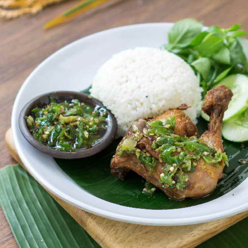
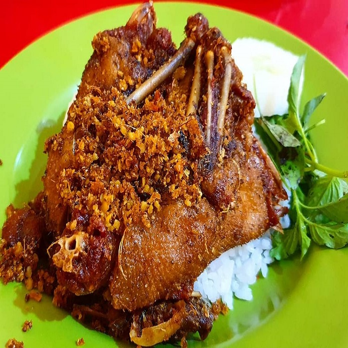
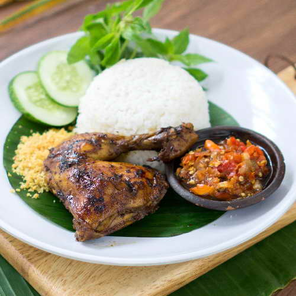
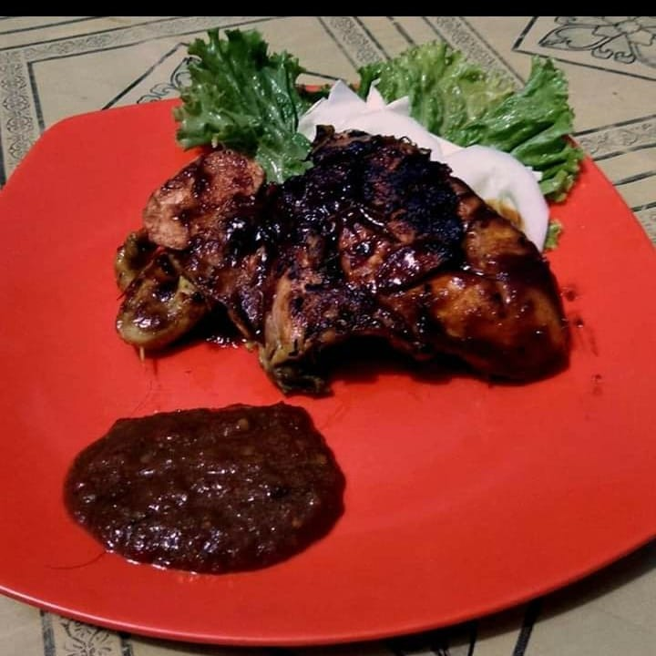
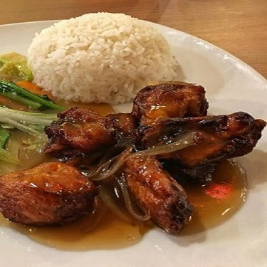
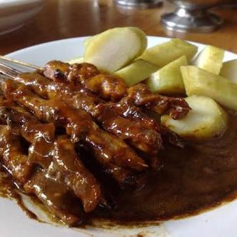

Bebek
Bebek Goreng Cabe Ijo

Bebek goreng khas Sontoloyo dari Bebek pilihan dan bumbu yang diwariskan secara turun temurun dipadu dengan Cabe Ijo yang gurih nan lezat.
Bebek Kremes

Bebek Kremes istimewa dari Sontoloyo yang diungkep dengan sempurna serta digoreng dengan garing dan dilengkapi kriuk kriuk . Maknyos!
Bebek Panggang Sambal Korek

Bebek pilihan yang dipanggang dengan temperature yang pas dipadu dengan Sambal Korek menghasilkan rasa yang manis serta pedas yang lezat
Ayam
Ayam Bakar Bumbu Kacang

Ayam Bakar khas Sontoloyo dari Ayam pilihan yang dibakar dengan hati hati agar kualitas selalu terjaga disertai dengan Bumbu Kacang manis serta gurih
Ayam Saus Mentega

Menu baru yang kami hadirkan dan disukai oleh banyak orang, Ayam Saus Mentega disertai Sayur Capcai yang ditumis sedemikian rupa
Sate Ayam Bumbu Kacang

Siapa sih yang nggak suka sate? Sepertinya nggak ada. Cobain Sate Ayam khas Sontoloyo dengan lumeran Bumbu Kacang disertai Lontong. Mantul!